Las mismas pantallas que ya conocen, con ventas de todas las tiendas, stock, producción, cobros, bancos y proveedores que se hablan entre sí.
Lo que hablamos en las reuniones, y la vara con la que se mide todo lo que sigue.
Los del dueño y los de la contadora, desde la misma base: lo vendido, lo cobrado, el stock y los impuestos dan igual en todos lados, sin controlar todo dos veces.
Todos los depósitos, remitos y rendición para depósito, y órdenes de fabricación con su materia prima.
Cada venta facturada en ARCA desde sus puntos de venta, y las facturas de proveedores traídas directo de ARCA.
Mercado Libre, Tiendanube, Frávega, Provincia Compras y Tienda BNA en un solo lugar, sin cargar las ventas a mano, con el stock y los precios publicados desde el sistema. Y lugar para sumar tiendas nuevas.
Nadie tiene que aprender de cero. El sistema respeta la forma en que ya trabajan y cambia lo que no se ve: cómo se conecta cada dato con el resto.
Mismo orden de trabajo, con números en los que se puede confiar.
Armamos una maqueta navegable para que lo puedan ver antes de construirlo. Tocá cada parte para recorrerla.
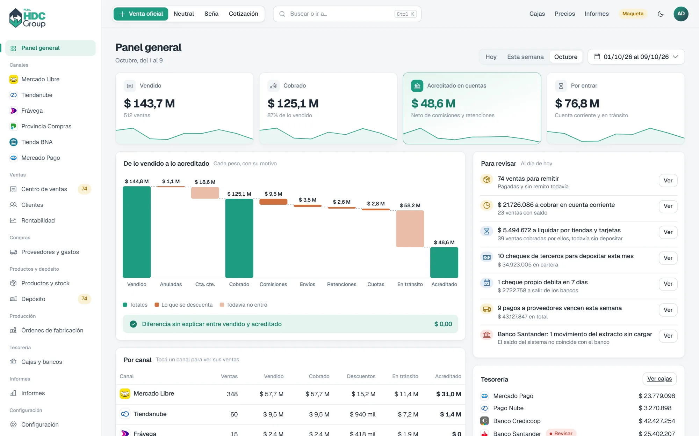
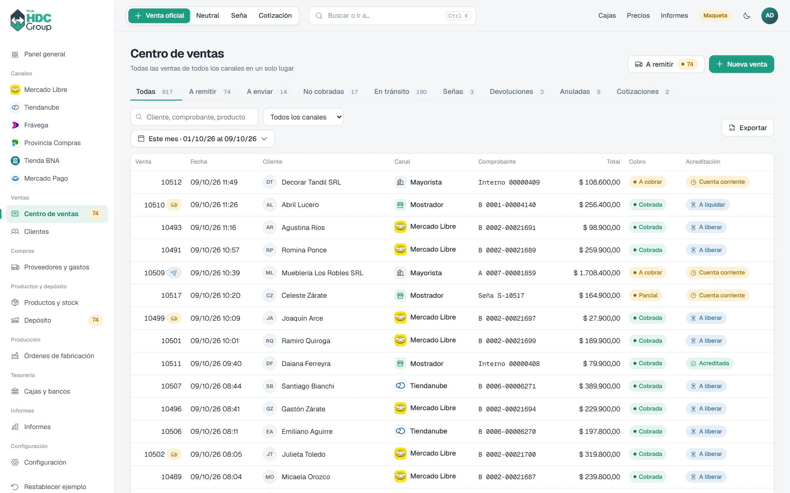
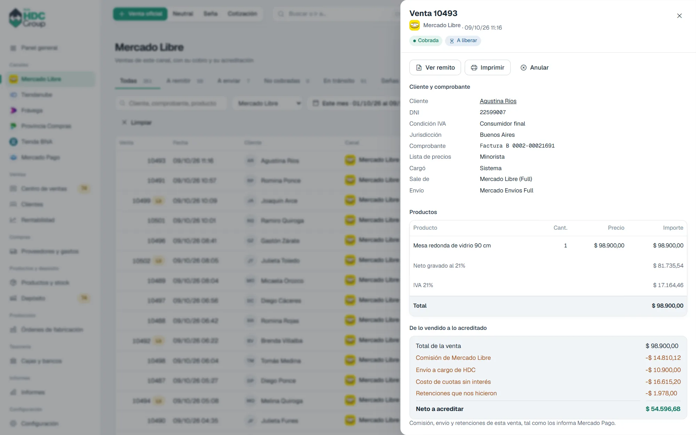
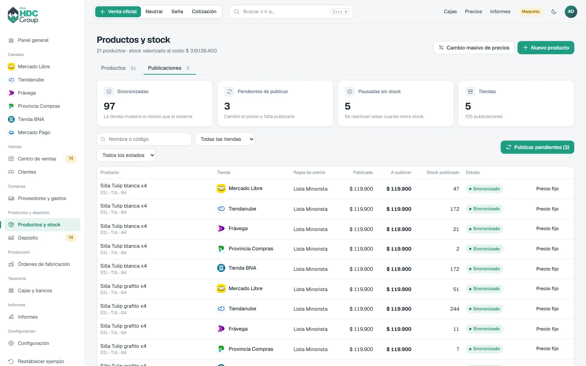
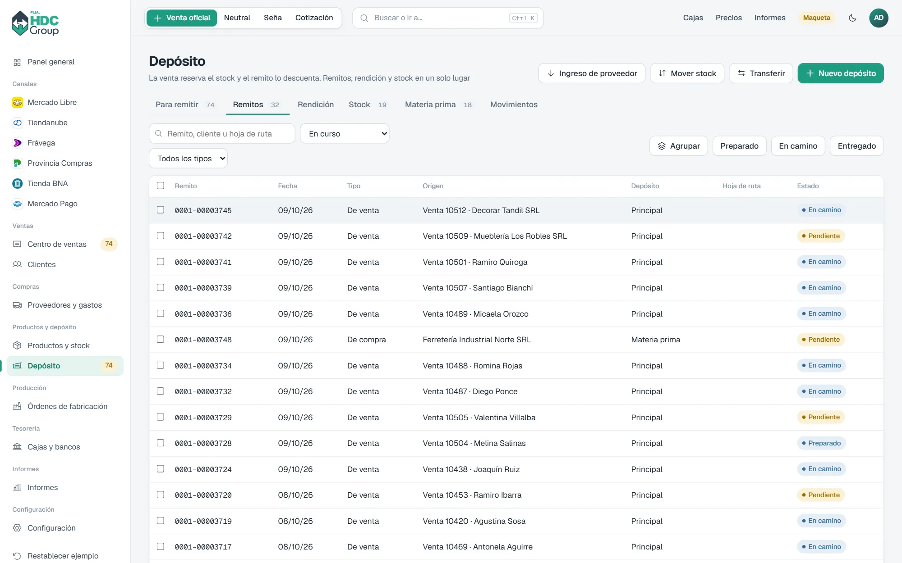
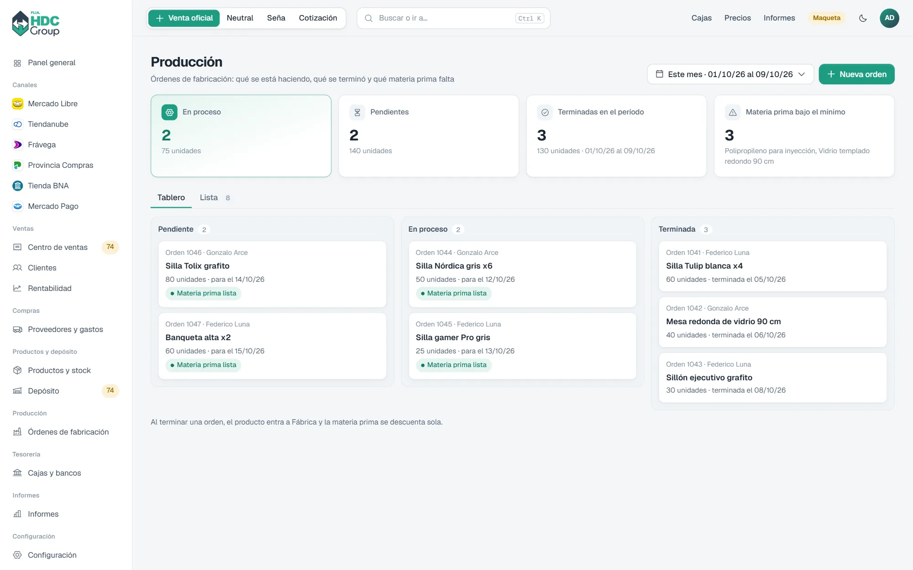
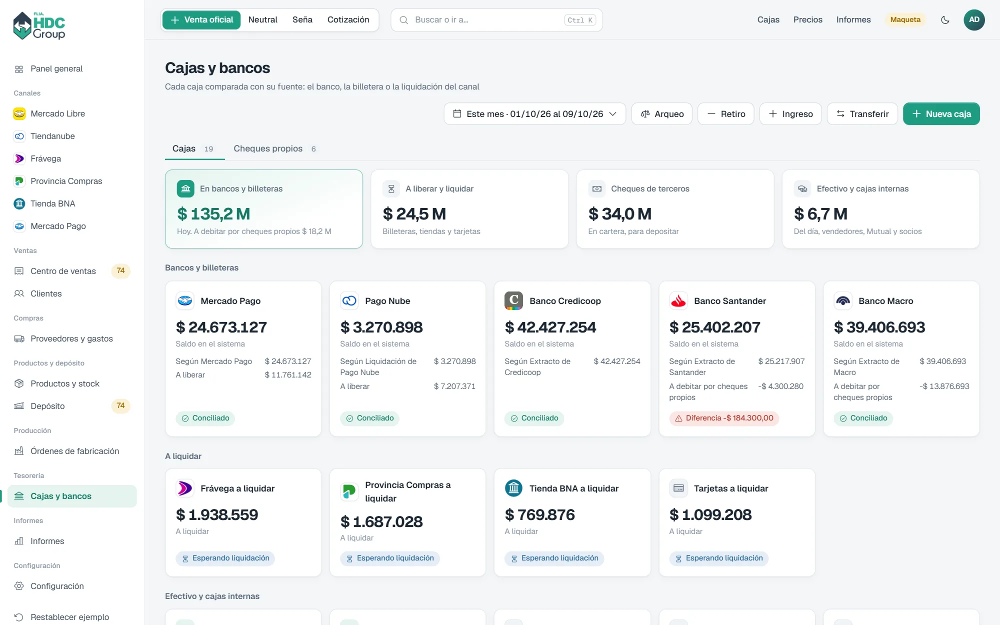
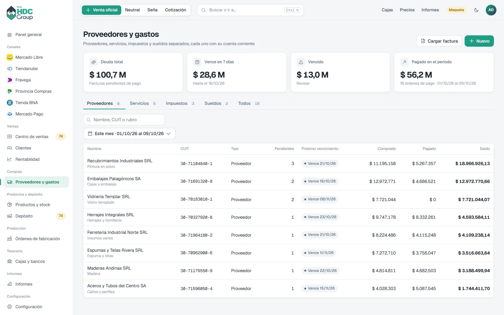
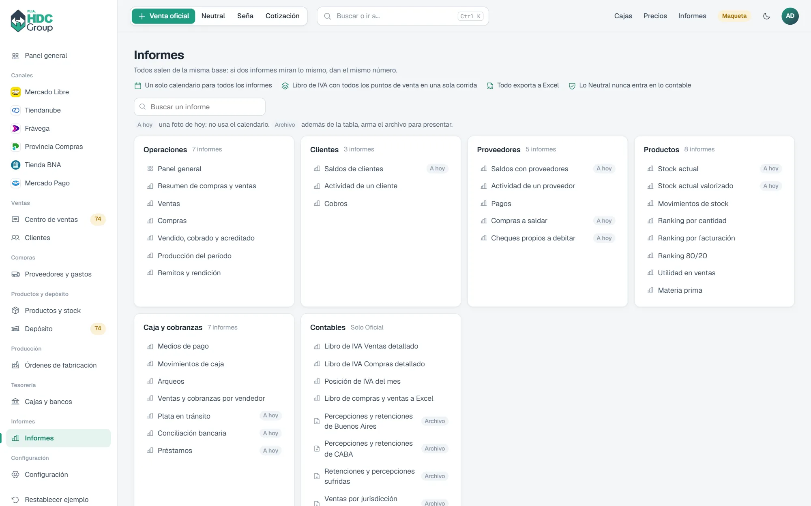
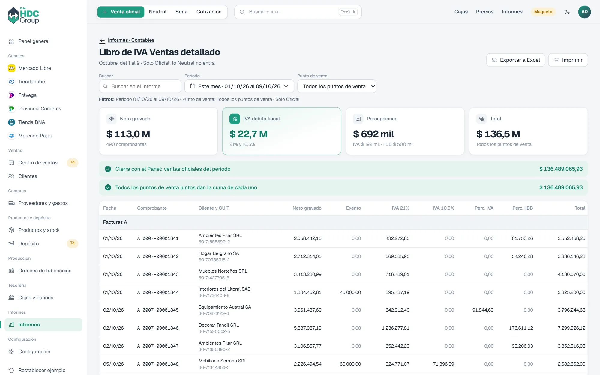
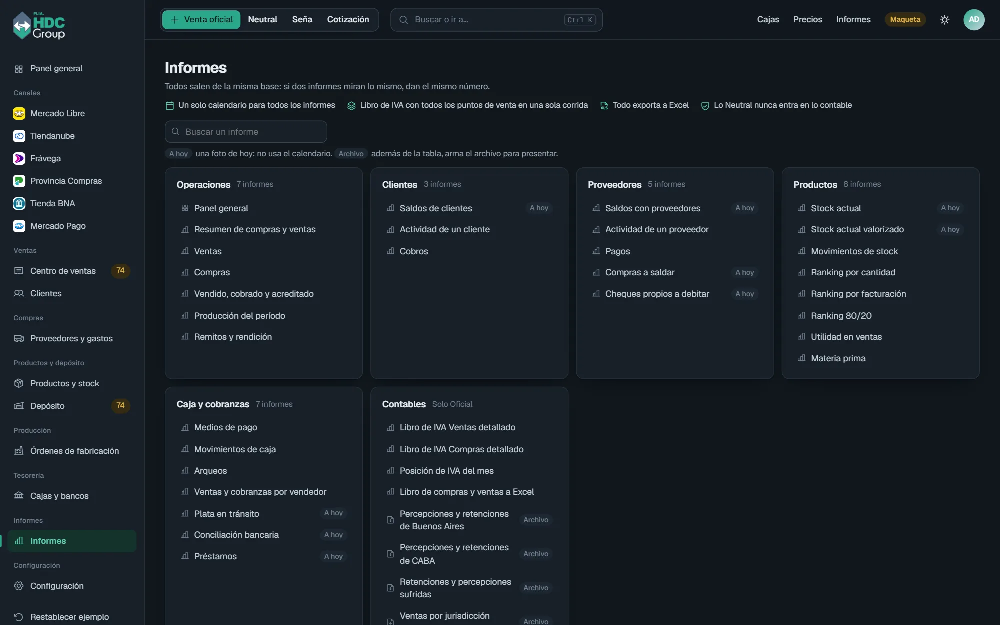
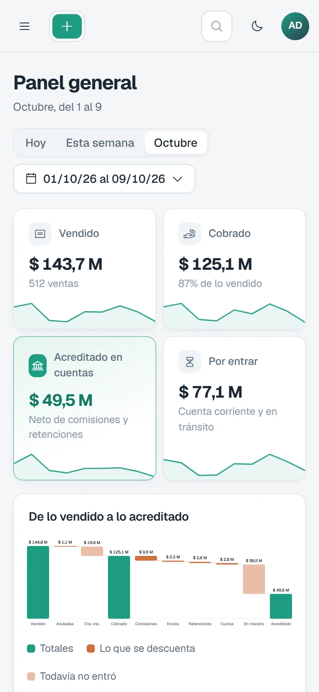
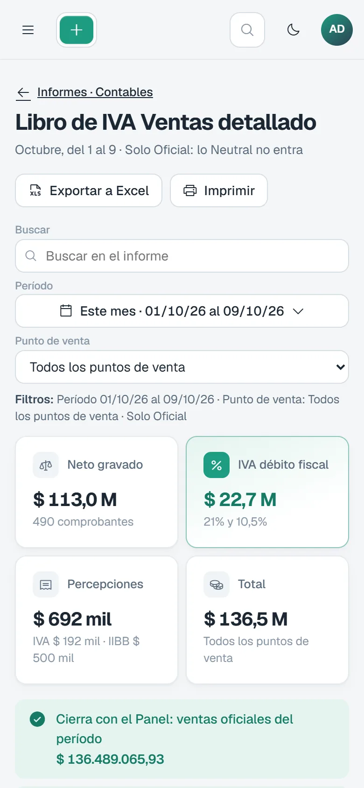
Módulo por módulo, para qué sirve y lo que van a poder hacer desde el primer día de uso.
Para qué: Ver todas las ventas en un lugar, sin cargar ninguna a mano.
Para qué: Que cada venta salga facturada sola, con el comprobante correcto.
Para qué: Saber cuánto entró de verdad por cada venta y por qué hay diferencias.
Para qué: Saber quién debe, cuánto y desde cuándo, en todos los canales.
Para qué: Saber a quién se le debe y cuándo vence, y pagar con las retenciones bien hechas.
Para qué: Que el saldo del sistema sea el mismo que el del banco.
Para qué: Cambiar un precio una vez y que llegue a todas las tiendas.
Para qué: Saber qué hay, dónde está y qué falta despachar.
Para qué: Seguir lo que se fabrica y la materia prima que consume.
Para qué: Decidir con números que cierran, sin controlar todo dos veces.
Para qué: Pasarle al estudio contable todo listo, sin rearmar nada.
Para qué: Que cada uno toque solo lo suyo y que no se pierda nunca un dato.
Los mismos grupos y nombres que ya usan, pero calculados desde una sola base. Si dos informes miran lo mismo, dan el mismo número.
Resumen de compras y ventas con números de verdad, ventas por canal, día y producto, vendido, cobrado y acreditado, producción del período, remitos y rendición.
Saldos en cuenta corriente por mes, a 30, 60 y 90 días, por vendedor y con vencimientos. Actividad de cada cliente y cobros.
Saldos, actividad de cada proveedor, órdenes de pago con sus retenciones, compras a saldar y cheques propios a debitar.
Stock actual por depósito, rubro y ubicación. Stock valorizado al costo o por cualquier lista. Movimientos, rankings, 80/20, utilidad y materia prima.
Medios de pago, movimientos de cada caja, arqueos, ventas y cobranzas por vendedor, plata en tránsito, conciliación bancaria y préstamos.
Libros de IVA Ventas y Compras, posición de IVA, ARBA y AGIP por mes y quincena, deducciones, la base para Convenio Multilateral, SICORE, Libro de IVA Digital y padrón de alícuotas.
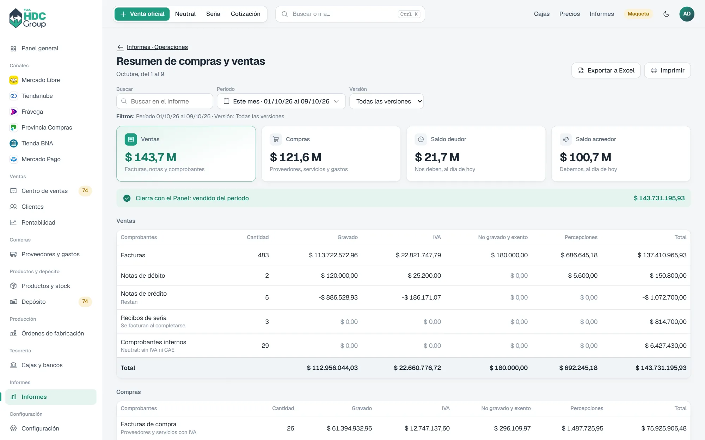
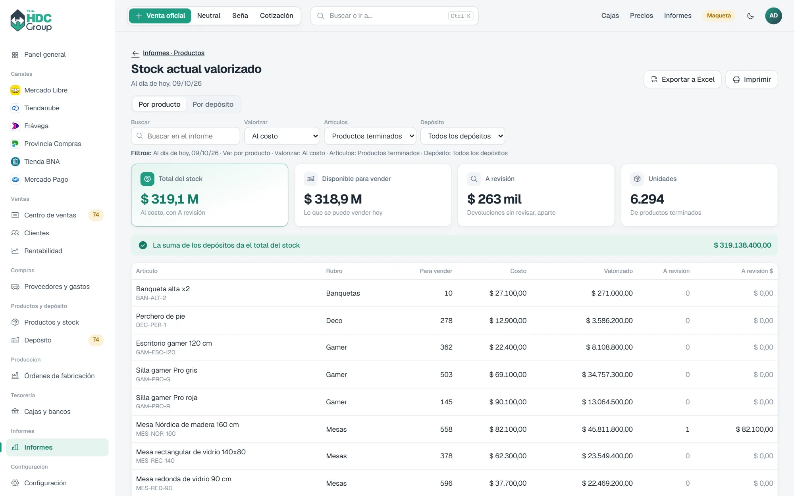
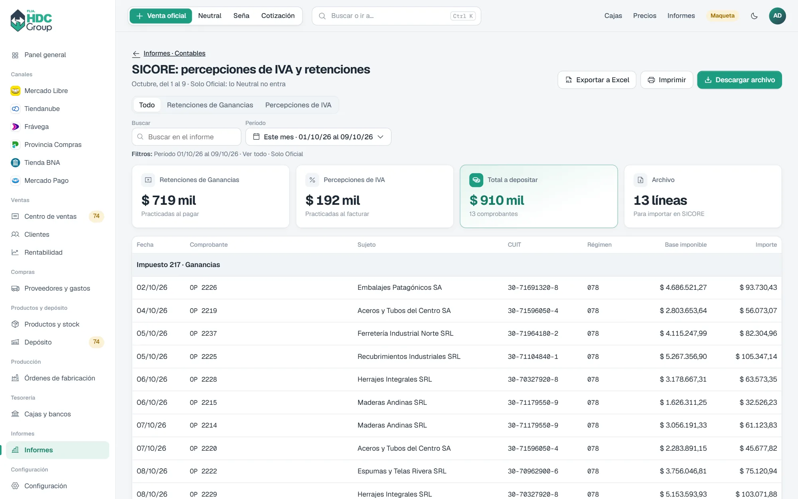
Todo desde el mismo sistema, sin pagar otra herramienta para conectar tiendas. Cada una se conecta de la mejor forma que permite, y la que no tiene conexión abierta la operamos nosotros. De su lado, solo las autorizaciones del principio.
Mercado Libre, Tiendanube y Mercado Pago, por su conexión oficial. Frávega y Provincia Compras, con sus claves de vendedor, que se confirman en la primera etapa. Las ventas entran solas, la factura se sube a la tienda que la pide, y el stock y los precios salen del sistema a cada tienda. En Provincia Compras, los cambios de publicación los aprueba el canal.
Los cobros de Pago Nube, las liquidaciones de Frávega y Provincia Compras y el cierre diario de las tarjetas del mostrador llegan por mail a una casilla del sistema, que los lee y los une a cada venta.
Tienda BNA no abre su conexión a otros sistemas. La operamos nosotros: cada día hábil bajamos ventas y liquidaciones, el sistema cruza cada venta por monto, fecha y cuotas, y actualizamos stock y precios cuando cambian. Para que nunca se venda lo que no hay, trabaja con su propio cupo de stock.
Si algo no cierra, lo revisamos nosotros y les avisamos con el motivo. Las claves y usuarios que nos den se guardan cifrados y los pueden cambiar cuando quieran. Si Nación habilita la conexión directa, Tienda BNA pasa a estar en vivo, y una tienda nueva se suma desde Configuración, sin cambiar el sistema.
Vendido, cobrado y acreditado con el motivo de cada peso.
Todos los informes salen de la misma base.
Se cambia una vez y se publica en cada tienda.
Lo que hay que remitir, siempre a la vista.
Con la búsqueda rápida (Ctrl K): por nombre, CUIT, comprobante o monto.
Ventas de las tiendas y facturas de ARCA, sin cargar una por una.
Cada caja comparada con su extracto.
Computadora, tablet o celular, en modo claro u oscuro.
Además de las pantallas, lo que hace la diferencia en el día a día.
Con su forma de trabajar y sus pantallas de siempre. Lo que no usan no está, y lo que les falta se suma.
Lo que no tiene conexión abierta, como Tienda BNA, lo bajamos y cruzamos nosotros. Si algo no cierra, les avisamos con el motivo.
Funciona al lado de su sistema actual, leyendo sus datos, sin que nadie cargue dos veces. El cambio se hace recién cuando un cierre de mes da igual en los dos.
Lo construye y lo mantiene el mismo equipo. Lo que piden se ajusta rápido, sin tickets ni intermediarios.
Si ARCA o una tienda no responde, la venta queda en espera y se factura sola cuando vuelve. Y los datos son de HDC, con copia diaria cifrada.
Usuario por persona, permisos por área y registro de quién hizo qué. Lo que no corresponde, el sistema no lo deja hacer.
La maqueta muestra cómo se va a ver y cómo se va a usar. Por debajo todavía no hay nada conectado: no factura, no lee los canales ni los bancos y los datos son inventados. Construir eso es la mayor parte del trabajo.
Seis frentes de trabajo que no se ven en la maqueta y son los que hacen que el sistema funcione de verdad.
Mientras se construye, siguen trabajando con su sistema actual. Lo primero que reciben son los informes del dueño y de la contadora sobre sus datos reales, sin tocar la operación. La facturación y la publicación de stock y precios se encienden el día del cambio, para que nunca haya dos sistemas facturando o publicando a la vez.
Cerramos sus informes con el dueño y la contadora y los ponemos a andar sobre sus datos reales, con vendido, cobrado y acreditado cruzados. Solo lectura, al lado del sistema actual.
Centro de ventas, clientes, las cinco tiendas y ARCA, probados con sus datos sin emitir comprobantes reales.
Liquidaciones, cajas, bancos, préstamos, cheques y valores diferidos.
Depósitos, remitos y rendición, órdenes de fabricación y publicación de stock y precios, lista para encender.
Proveedores, pagos, retenciones y percepciones, con los archivos comparados con la contadora.
El último año migrado, un cierre de mes comparado, capacitación por área y, el día del cambio, se encienden facturación y publicaciones.
Para conectar cada parte y arrancar sin demoras.